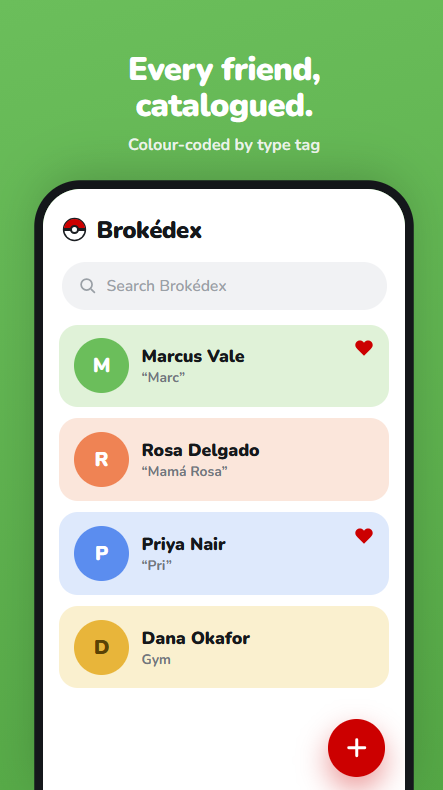
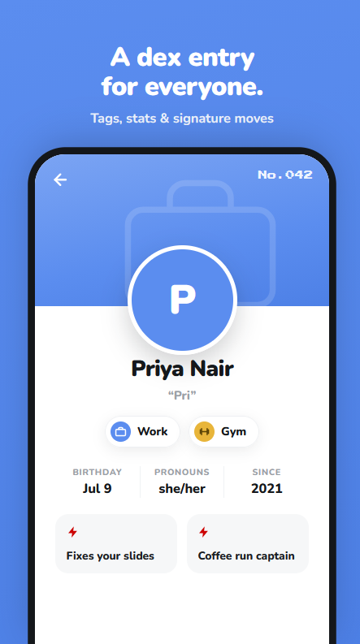
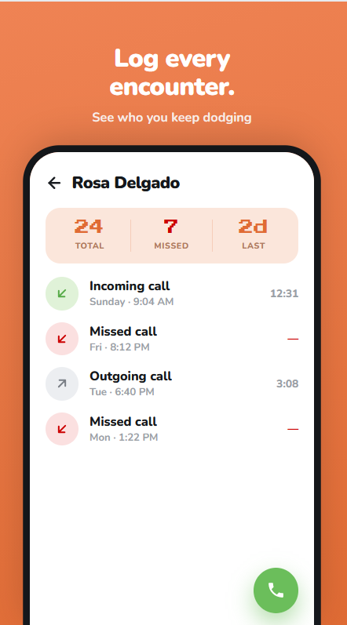

Side project
A Pokédex-styled Android app for organising the people in your life — colour-coded by tag, searchable, with a call-log history built in.
Solo build · Kotlin, Jetpack Compose, Room · Fully offline, zero network permissions · v1.0.0
Brokédex turns your contacts into Pokédex entries: each person gets an entry number, a colour pulled from their type tag, a photo, and up to four “moves” — short, specific traits like a catchphrase or the thing they’re known for. A dedicated log tracks every incoming, outgoing, and missed call against that contact, so “who do I keep missing” becomes a glance instead of a guess. Search, favourites, and tag filters keep the list usable past the first twenty entries. Everything lives in a local Room database — no account, no internet permission, nothing leaves the phone.



Built the way I’d run a real product, not a hackathon weekend. A design PRD locked the visual language first — “if the Pokédex were redesigned by a modern fintech app”: rounded cards and pastel tag colours against one monospaced accent, reserved only for entry numbers. That fed a full developer handoff — every screen, every field’s validation rule, every empty state and edge case (what happens to an entry number when that contact is deleted, what the delete-confirmation copy says, the 300ms budget for search) specified precisely enough to hand to a developer without me in the room.
I was that developer: Kotlin and Jetpack Compose for the UI, Room for local persistence, built end-to-end with Claude Code and shipped as a self-signed release rather than routed through a store review cycle. A GTM plan and a roadmap doc came after the build, not before — the same sequencing discipline as the Yokogawa case, applied this time to something I owned outright, spec to release.
Spec discipline
Writing a developer handoff another builder could execute without me clarifying scope live is the same discipline as a PRD a cross-functional team can build against.
Full lifecycle, not just the deck
PRD → design spec → build → GTM → roadmap. Most of my case studies stop at the strategy layer; this one shipped an installable product.
Positioning under constraint
A nostalgia-utility hybrid with no obvious comp forced real audience thinking: who wants a Pokédex for their contacts, and why choose it over the contacts app already on their phone.
Trade-off calls
The handoff doc’s own “out of scope for v1” list — no cloud sync, no iOS, no social sharing — is a product call, not an engineering one. Same scoping muscle as the CareerLabs and Pineapple work.
Android, sideloaded (not on the Play Store) — the release page has the APK and full notes.